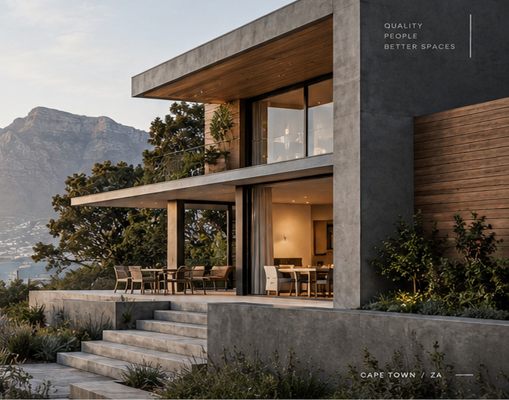

Understand the constraints.
A new build asks the contractor to coordinate many moving parts over a longer programme. The demonstration focuses on sequencing, communication and quality review.
FICTIONAL CASE STUDY / CAPE TOWN
Deliver a contemporary coastal family home from an approved design with a strong relationship between indoor living and the landscape.
Deliver a contemporary coastal family home from an approved design with a strong relationship between indoor living and the landscape.
This project is fictional and exists to demonstrate how a real builder's project page would communicate scope, process and outcome.


A new build asks the contractor to coordinate many moving parts over a longer programme. The demonstration focuses on sequencing, communication and quality review.
Site establishment, structure, envelope, services coordination, internal finishes and handover are represented as fictional scope for the demo.
The case study demonstrates how a new-build page can show programme, responsibilities and finished quality without relying on generic “luxury” language.
The biggest difference was knowing who was responsible for each stage and when decisions had to be made.
LET'S BUILD TOGETHER
Tell us about your project and start with the right conversation.